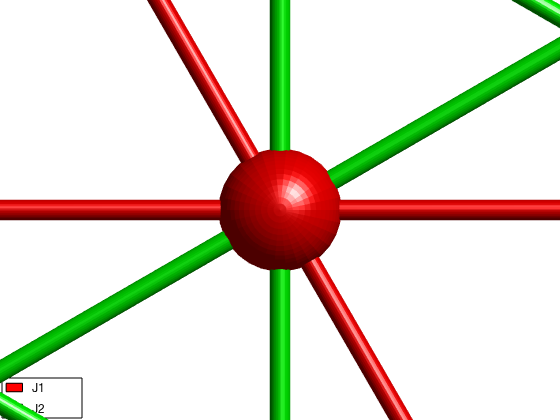
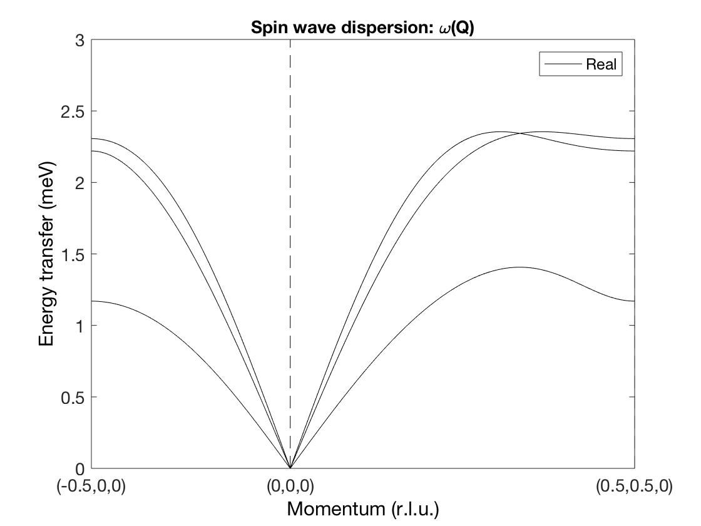
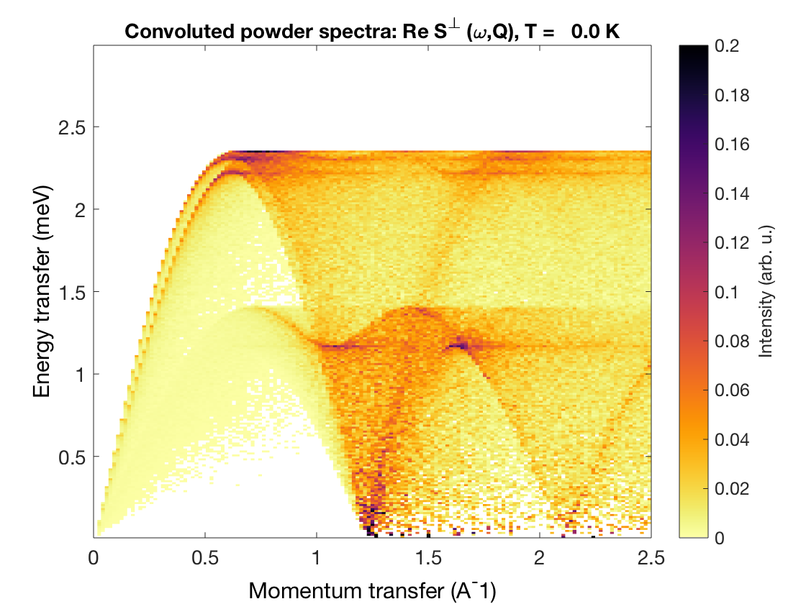

Contents
k=0 Kagome antiferromagnet
We create a lattice with space group "P -3" where all first neighbor bonds are symmetry equivalent and add a magnetic Cr+ with S=1 spin.
AFkagome = spinw; AFkagome.genlattice('lat_const',[6 6 10],'angled',[90 90 120],'spgr','P -3') AFkagome.addatom('r',[1/2 0 0],'S', 1,'label','MCu1','color','r') plot(AFkagome,'range',[2 2 1])

Create bonds
Generate the list of bonds and lists them.
AFkagome.gencoupling('maxDistance',7) disp('Bonds:') AFkagome.table('bond',[])
Bonds:
ans =
bond dl length matom1 idx1 matom2 idx2 matrix
____ ______________ ______ ______ ____ ______ ____ ______________
1 0 1 0 3 'MCu1' 3 'MCu1' 1 '' '' ''
1 0 -1 0 3 'MCu1' 1 'MCu1' 2 '' '' ''
1 0 0 0 3 'MCu1' 2 'MCu1' 3 '' '' ''
1 0 0 0 3 'MCu1' 3 'MCu1' 1 '' '' ''
1 1 0 0 3 'MCu1' 1 'MCu1' 2 '' '' ''
1 -1 0 0 3 'MCu1' 2 'MCu1' 3 '' '' ''
2 1 -1 0 5.196 'MCu1' 1 'MCu1' 2 '' '' ''
2 0 1 0 5.196 'MCu1' 2 'MCu1' 3 '' '' ''
2 -1 0 0 5.196 'MCu1' 3 'MCu1' 1 '' '' ''
2 0 0 0 5.196 'MCu1' 1 'MCu1' 2 '' '' ''
2 -1 -1 0 5.196 'MCu1' 2 'MCu1' 3 '' '' ''
2 1 1 0 5.196 'MCu1' 3 'MCu1' 1 '' '' ''
3 0 1 0 6 'MCu1' 1 'MCu1' 1 '' '' ''
3 -1 -1 0 6 'MCu1' 2 'MCu1' 2 '' '' ''
3 1 0 0 6 'MCu1' 3 'MCu1' 3 '' '' ''
4 0 1 0 6 'MCu1' 2 'MCu1' 2 '' '' ''
4 -1 -1 0 6 'MCu1' 3 'MCu1' 3 '' '' ''
4 1 0 0 6 'MCu1' 1 'MCu1' 1 '' '' ''
5 0 1 0 6 'MCu1' 3 'MCu1' 3 '' '' ''
5 -1 -1 0 6 'MCu1' 1 'MCu1' 1 '' '' ''
5 1 0 0 6 'MCu1' 2 'MCu1' 2 '' '' ''
Hamiltonian
We create AFM first neighbor interaction and weak 2nd neighbor AFM exchange.
AFkagome.addmatrix('label','J1','value',1.00,'color','r') AFkagome.addmatrix('label','J2','value',0.11,'color','g') AFkagome.addcoupling('mat','J1','bond',1) AFkagome.addcoupling('mat','J2','bond',2) plot(AFkagome,'range',[3 3 1])
Generate magnetic structure
We create a k = (0 0 0) magnetic structure, with the three spin directions in the unit cell (120 degree between neighbors). The spin vector components are given in the coordinate system of the lattice vectors (abc).
S0 = [1 -2 1; 2 -1 -1; 0 0 0]; AFkagome.genmagstr('mode','direct','k',[0 0 0],'n',[0 0 1],'unitS','lu','S',S0); disp('Magnetic structure:') AFkagome.table('mag') AFkagome.energy plot(AFkagome,'range',[3 3 1])
Magnetic structure:
ans =
num matom idx S realFhat pos kvect
___ ______ ___ _ __________________________ _________________ ___________
1 'MCu1' 1 1 0 1 0 0.5 0 0 0 0 0
2 'MCu1' 2 1 -0.866 -0.5 0 0 0.5 0 0 0 0
3 'MCu1' 3 1 0.866 -0.5 0 0.5 0.5 0 0 0 0
Ground state energy: -1.110 meV/spin.

Calculate spin wave dispersion
afkSpec = AFkagome.spinwave({[-1/2 0 0] [0 0 0] [1/2 1/2 0] 100},'hermit',false);
figure
sw_plotspec(afkSpec,'mode',1,'axLim',[0 3],'colorbar',false,'colormap',[0 0 0],'dashed',true)
 Powder spectrum
afkPow = AFkagome.powspec(linspace(0,2.5,150),'Evect',linspace(0,3,250),... 'nRand',1e3,'hermit',false); figure sw_plotspec(afkPow,'axLim',[0 0.2])
Written by Bjorn Fak & Sandor Toth 06-Jun-2014, 06-Feb-2016